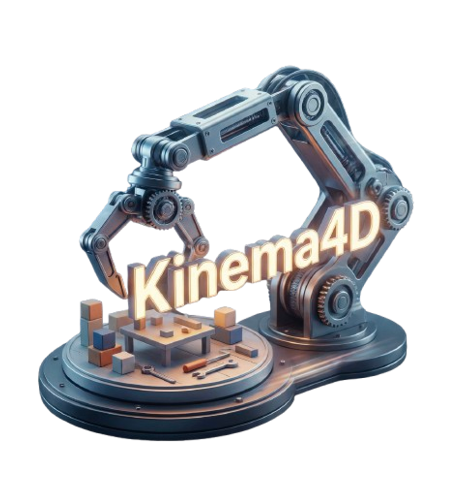

Simulating robot-world interactions is a cornerstone of Embodied AI. Recently, a few works have shown promise in leveraging video generations to transcend the rigid visual/physical constraints of traditional simulators. However, they primarily operate in 2D space or are guided by static environmental cues, ignoring the fundamental reality that robot-world interactions are inherently 4D spatiotemporal events that require precise interactive modeling. To restore this 4D essence while ensuring the precise robot control, we introduce Kinema4D, a new action-conditioned 4D generative robotic simulator that disentangles the robot-world interaction into: i) Precise 4D representation of robot controls : we drive a URDF-based 3D robot via kinematics, producing a precise 4D robot control trajectory. ii) Generative 4D modeling of environmental reactions : we project the 4D robot trajectory into a pointmap as a spatiotemporal visual signal, controlling the generative model to synthesize complex environments’ reactive dynamics into synchronized RGB/pointmap sequences. To facilitate training, we curated a large-scale dataset called Robo4D-200k, comprising 201,426 robot interaction episodes with high-quality 4D annotations. Extensive experiments demonstrate that our method effectively simulates physically-plausible, geometry-consistent, and embodiment-agnostic interactions that faithfully mirror diverse real-world dynamics. For the first time, it shows potential zero-shot transfer capability, providing a high-fidelity foundation for advancing next-generation embodied simulation.
Ours and GT manipulate same object => similar outcome; TesserAct generates non-existing object => wrong outcome.
Ours and GT contact/manipulate => similar outcome; TesserAct no contact but manipulate => wrong outcome.
Ours and GT grasp/manipulate same object => similar outcome; TesserAct grasps two objects => wrong outcome.
Ours and GT manipulate same object => similar outcome; TesserAct generates non-existing object => wrong outcome.
Ours and GT all failed to grasp the object; TesserAct still manipulates the object.
Ours and GT all failed to grasp the object; TesserAct still manipulates the object.
Ours and GT all failed to grasp the object; TesserAct still manipulates the object and generates the illusion.
Ours and GT all failed to grasp the object; TesserAct still manipulates the object.
Successful task completion rollouts.
"Near-miss" failure cases. Our model correctly interprets the spatial gap between the gripper and the object, even when their RGB textures overlap in 2D views.
Successfully pick and place.
Successfully pick and place.
Successfully pick and place.
Failed task completion.
Failed task completion.
Failed task completion.
Drag a deformable object.
Pick and place under complex spatial constriants.
Pick and place of a small object.
Pick and place on another object.
Drag a large deformable object.
Fold a deformable object.
Pick and move into closer view.
Subtle contact and open a shelf.
Subtle pick and place a tiny object.
Open the door to a new world.
Close a microwave oven.
Close a microwave oven.
Pick and place a small object.
Pick and place a small object.
All failed grasp the object.
Pick and place a small object.
Pick and place a small object.
Pick and place a small object.
Open a drawer.
Pick and place a transparent object.
Pick and place a small object.
@article{wan2025wan,
title={Kinema4D: Kinematic4D World Modeling for Spatiotemporal Embodied Simulation},
author={Xu, Mutian and Zhang, Tianbao and Liu, Tianqi and Chen, Zhaoxi and Han, Xiaoguang and Liu, Ziwei},
journal={arXiv preprint arXiv:xxxxxxxxx},
year={2026}
}